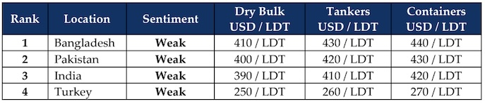

inWeekly Demolition Reports27/10/2025

Global markets seemed to take a breather this week as things turned slow across the board once again, not only on the shipping side but even the ship recycling side of things. Currencies fluctuated in moderate tandem, local steel plate prices made surprisingly marginal moves, all while the Baltic Exchange Dry Index slipped and oil steadied itself. The BDI reported a declining week that shaved off about 3.2% by CoB Friday, dropping to its lowest levels since early October as the Cape index took the lead shaving off over 6% of its value, while Supramaxes dipped a comparatively milder 9 points and the Panamax index remained steady for the week even though the overall index is nearly 4% down.
As inflation rose marginally in the U.S. (climbing to 3% by the end of the September), oil managed to gain some traction this week, firming to USD 62.14/barrel – a 1% climb on the back of anticipations on a possible China – U.S. trade deal, all while Trump threatens Putin with further escalations as sweeping sanctions take effect, not only on Russian oil trade (particularly with India), but even the EU now hopping on the wagon, reportedly blacklisting hundreds of container vessels this week.
And as the global dark / shadow fleets start to grow, the woeful performance of the Indian sub-continent ship recycling markets continues on and there are few emerging signs of light at the end of the tunnel (more like an oncoming freight train) for the remainder of this year. Prices have fallen so low over recent weeks that constant discussions of prices below USD 400/LDT are comfortably prevalent and it seems increasingly certain that any viable recovery has still not bought a ticket to the sub-continent recycling sector.
India has endured the roughest times over the last several weeks with levels plummeting on the back of rapidly deteriorating local steel prices and a drastically depreciating currency that continues to suffer on the back of 50% tariffs amidst the U.S. – India – Russia love triangle. Pakistan has not been too far behind the recent falls with plunging demand due to an influx of cheaper steel imports, all while Bangladesh shows moderate signs of life with a couple of local arrivals. The occasional and aggressive offerings on larger LDT units have been so sporadic, it has left ship owners and cash buyers confused as to where levels on the ground really stand. And as India celebrates a quieter time thanks to Diwali Holidays, Turkey remains seemingly absent regardless of work or play.
Overall, mounting global trade wars and tariff implementations are leaving global corporations confused and fearing the worst, should these reciprocal and seemingly ever escalatory measures continue to unfold thereby stifling shipping sectors, global trade, FX markets, steel products, and overall cost of living. For the time being, freight rates remain relatively firm, and the suffocating inflow of recycling tonnage has remained painfully thin, as we ease into the November 2025 and have little to show for yet another year of record low supply.
For Week 43 of 2025, GMS Market Rankings / vessel indications are as below

📄 Download PDF: Ship-recycling-market-insight-Week-43-10-24-2025-Woefully_Slow.pdfSource: GMS,Inc.https://www.gmsinc.net/gms_new/index.php/web